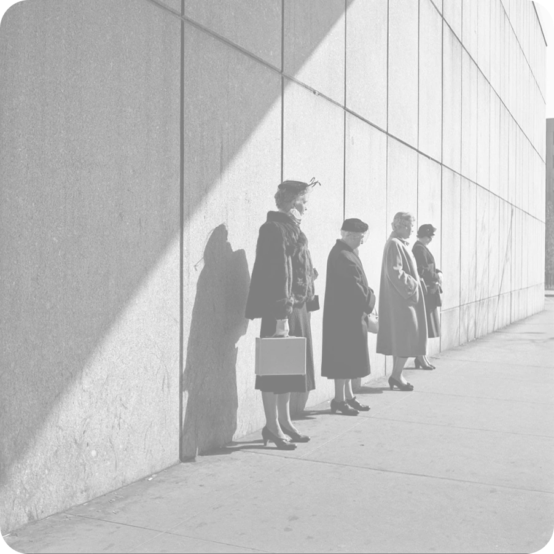
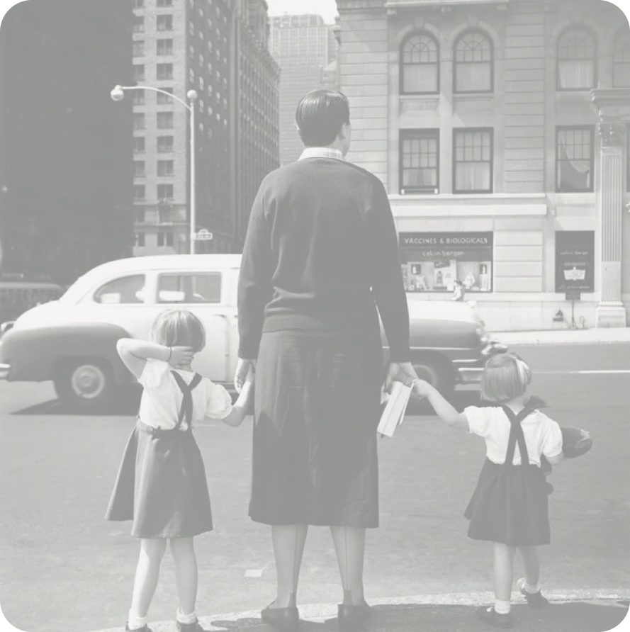

Vivian Maier
oeuvresQui était Vivian Maier ?
Vivian Maier (1926-2009) est
une photographe américaine,
longtemps restée inconnue
du grand public.
Elle a travaillé pendant près de
quarante ans comme nourrice à
Chicago, tout en photographiant
quotidiennement les rues
qui l’entouraient.
Elle capturait principalement des scènes de vie, des passants,
des enfants, des travailleurs et des autoportraits réalisés
à l’aide de miroirs ou de vitrines.

Son œuvre, composée de plus
de 100 000 photographies,
n’a été découverte qu’après
sa mort,
lorsqu’un collectionneur a
acheté une partie de ses
négatifs lors d’une vente
aux enchères.

Aujourd’hui, Vivian Maier est
considérée comme l’une des
grandes figures de la photographie
de rue du XXe siècle.